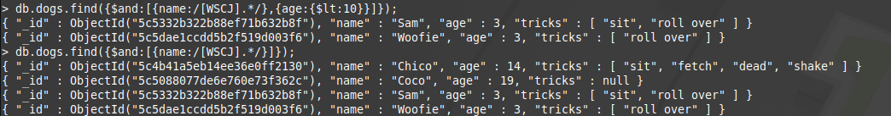
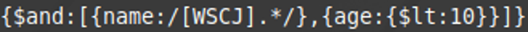
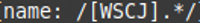
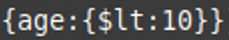

<!DOCTYPE html>
<html lang="en">
<head>
  <meta charset="UTF-8">
  <meta name="viewport" content="width=device-width, initial-scale=1.0">
  <meta http-equiv="X-UA-Compatible" content="ie=edge">
  <title>Regex Explained</title>
  <link href="https://fonts.googleapis.com/css?family=Amatic+SC|Comfortaa|Gamja+Flower|Indie+Flower|Josefin+Sans|Kosugi+Maru|Merienda|Noto+Serif+JP|Joti+One|Macondo|Montserrat|Open+Sans+Condensed:300" rel="stylesheet">
<script src="https://ajax.googleapis.com/ajax/libs/jquery/3.3.1/jquery.min.js"></script>
<link rel="stylesheet" href="https://maxcdn.bootstrapcdn.com/bootstrap/4.0.0/css/bootstrap.min.css">
    <link rel="stylesheet" type="text/css" href="../css/vm.css">
<script src="js/animated.js"></script>
</head>
<body>

</body>
</html>


<div id="master">
  <div id="header">
    <div style="float: left; padding: 150px; font-family: 'Macondo', cursive;">
      <h4>Created by Michael C</h4>
      <h5>Last Edited on 2/27/19</h5>
      <h3><a href="../index.html">Back to main Page</a></h3>

    </div>
    <div style="float: right; padding: 50px; padding-top: 150px">
      <h2>How I did Regular Expressions in MongoDB </h2>
</div>
</div>
<div id="main2" style="padding: 0px;">
  <table border="1" style="border: 1px;text-align: center;width: 100%; border-style: ridge;font-size: 16px;font-family: 'Montserrat', sans-serif;">
    <tr>
      <td><p>This is an example of a query and its results in MongoDB</p></td>
      <td></td>
    </tr>
    <tr>
      <td><p>This is the actual regular expression that is being used in order to query the database for specific results. This query also uses a boolean 'AND' so that any results must match both conditions being searched.</p></td>
      <td></td>
    </tr>
    <tr>
      <td><p>To explain, this regular expression has two parts. The first part is the [WSCJ] portion of the regular expression searches the database for any character in that character set. I.E. it searches for a capital W, S, C, or J. It then goes on to the second portion, which is the .*, which finds any character after the WSCJ and searches for either nothing after the WSJC or any number of characters after the WSCJ.</p></td>
      <td></td>
    </tr>
    <tr>
      <td><p>This part of the query simply checks for all dogs that are younger than 10 years old.</p></td>
      <td></td>
    </tr>
    <tr>
      <td><p>This is the query again with the results. As you can see, the results all have their first letter being a W, S, C, or J as well as all of the dogs are younger than 10 years old. The second query is to show that the AND boolean is working properly</p></td>
      <td></td>
    </tr>
  </table>
</div>
